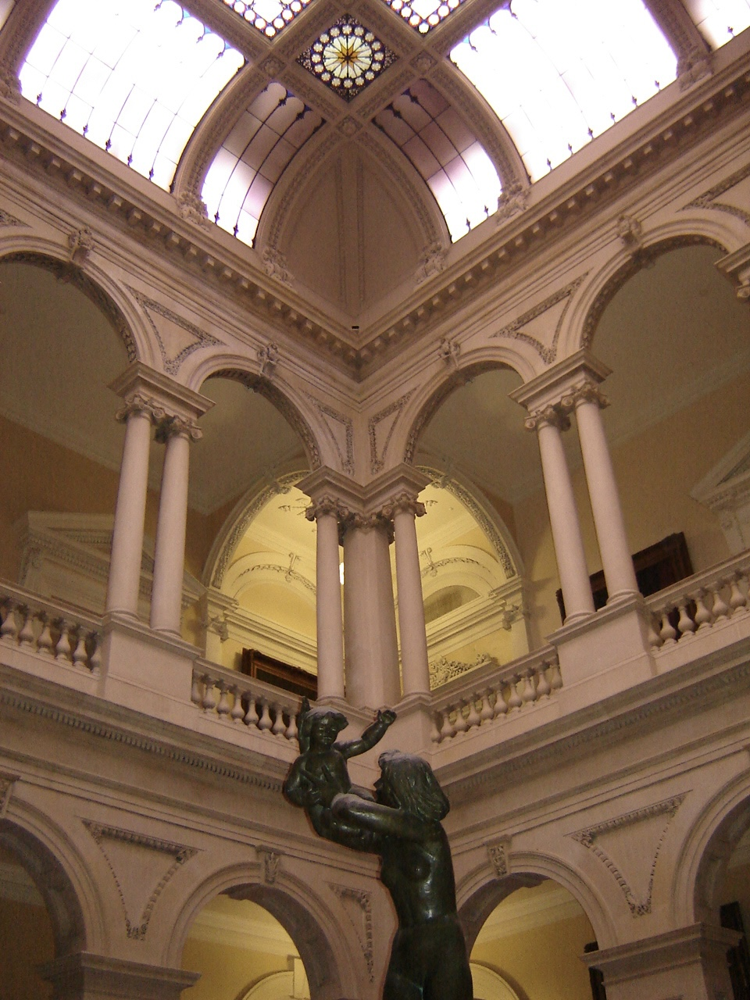
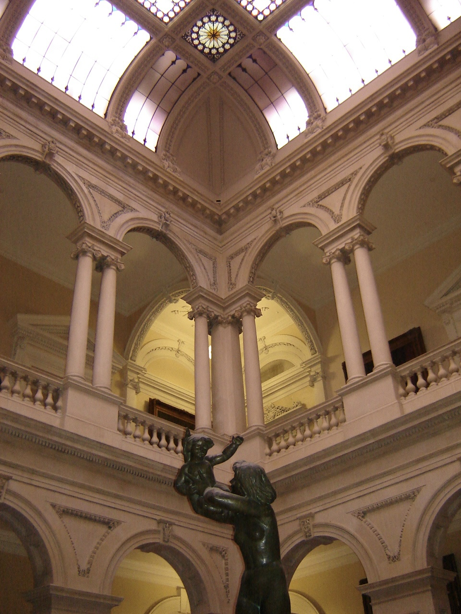

These are a collection of photos that I took using rules such as leading lines and rule of thirds to draw intention in my photos. I enjoy capturing natural scenes around me in an attempt to keep the moment.
 
